양장기능사 (2004-10-10 기출문제)
1과목: 임의 구분
1. 재봉틀 분해소제 때 가장 먼저 해야할 것은?
- 바늘을 뺀다.
- 노루발을 떼어 놓는다.
- 침판을 떼어 놓는다.
- 솔로 바늘판의 뒷면과 톱니의 부근을 깨끗이 털어낸다.
(정답률: 73%)

2. 인체 운동에 관련이 있는 체형의 주 요소라 할 수 없는 것은?
- 피부
- 골격
- 근육
- 관절
(정답률: 40%)
3. 일반적으로 재봉틀을 사용할 때 회전이 무겁고, 소리가 많이 나는 경우는?
- 반달집에 실이 끼였을 경우
- 바늘의 굵기와 실의 굵기가 다를 경우
- 땀수 조절기가 조절이 안될 경우
- 밑실 조절나사가 너무 조여졌을 경우
(정답률: 알수없음)
4. 그림과 같은 부호의 뜻은?
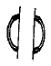
- 선의 교차 표시
- 직각 표시
- 늘임의 표시
- 맞춤의 표시
(정답률: 100%)
5. 봉제한 부분이 견고하지 못하여 여기저기 터지는 현상과 가장 상관이 있는 것은?
- 바늘 땀이 너무 촘촘하다.
- 실이 옷감에 비해 약하다.
- 박은 실의 땀(스티치)이 크기 때문이다.
- 실의 굵기가 굵다.
(정답률: 77%)
6. 옷감을 재단할 때 어깨와 옆선의 시접 분량으로 가장 적합한 것은?
- 0.5㎝
- 1㎝
- 2㎝
- 3㎝
(정답률: 93%)
7. 다음 그림에 나와 있는 슬리브의 이름은?
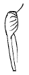
- 치킨레그 슬리브
- 웨지 슬리브
- 엘보랭드 슬리브
- 시드 슬리브
(정답률: 94%)
8. 다음 중 활동하기 가장 편한 소매산 높이는?
- A· H/6
- A· H/8
- A· H/4
- A· H/3
(정답률: 54%)
9. 키가 크고 날씬한 체형에 가장 어울리는 선은?
- 곡선
- 수직선
- 수평선
- 바이야스선
(정답률: 50%)
10. 뒤 소매산을 향한 주름이 생기는 경우의 보정법은?
- 소매산을 높여준다.
- 소매산을 늘여준다.
- 소매 중심점을 뒤쪽으로 이동한다.
- 소매 중심점을 앞쪽으로 이동한다.
(정답률: 67%)
11. 소매산을 가르키는 제도약자는?
- F.S.H
- B.S.H
- S.C.H
- S.B.L
(정답률: 86%)
12. 재봉기의 발달사에서 최초로 나타난 재봉기는?
- 2중 환봉 재봉기
- 오버로크 재봉기
- 본봉 재봉기
- 단환봉 재봉기
(정답률: 85%)
13. 바느질 감과 재봉실, 바늘의 관계에 대한 설명 중 바르게 연결된 것이 아닌 것은?
- 얇은 레이스- 면봉사 80번- 바늘 9호
- 견직물- 견봉사 50번- 바늘 9호
- 데님(Denim)천- 견봉사 50번- 바늘 11호
- 트리코트- 합성봉사 60번- 바늘 9호
(정답률: 59%)
14. 의복제작의 과정을 바르게 나열한 것은?
- 치수재기- 제도- 형지제작- 재단- 봉제
- 제도- 형지제작- 치수재기- 봉제- 재단
- 치수재기- 제도- 재단- 봉제- 형지제작
- 형지제작- 치수재기- 제도- 재단- 봉제
(정답률: 75%)
15. 목앞점과 목뒷점을 자연스러운 곡선으로 연결하였을 때 그 곡선의 어깨선과 목부위에서 만나는 점은?
- 목 앞점
- 목 옆점
- 목 뒷점
- 어깨 끝점
(정답률: 64%)
16. 패턴이 나타내는 스커트는?
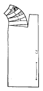
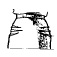
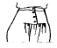
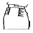
(정답률: 55%)
17. 재봉시 지퍼 등솔기를 다리미로 가른 후 봉제하여 외관상 박음선이 드러나게 처리되어 깔끔하며 스커트나 원피스에 많이 사용되는 지퍼는?
- 콘슬지퍼
- 양면지퍼
- 파스너
- 비스론
(정답률: 89%)
18. 재단 전에 옷감을 정리해야 할 필요성으로 올바른 것은?
- 옷감의 올을 바르게 정리하기 위해서
- 옷감의 두께를 증가시키기 위해서
- 옷감의 수지 성분을 제거하기 위해서
- 옷감의 강도를 높이기 위해서
(정답률: 95%)
19. 다음은 부분봉 중 단추구멍에 관한 것이다. 단추구멍의 위치가 가로형인 경우 앞 중심선에서 앞단 쪽으로 몇 cm 나온 위치에서 크기를 맞추어야 하는가?
- 0.2cm 정도 나온 위치에서 크기를 맞추어 정한다.
- 0.3cm 정도 나온 위치에서 크기를 맞추어 정한다.
- 1cm 정도 나온 위치에서 크기를 맞추어 정한다.
- 중심선에서 크기를 맞추어 정한다.
(정답률: 50%)
20. 다음의 자재소요량 산출 방법 중 봉사의 소요량 산출에 관한 항목이 아닌 것은?
- 천의 두께
- 스티치의 길이
- 봉사의 굵기
- 수축 형태
(정답률: 54%)
2과목: 임의 구분
21. 장촌식 제도법의 특징이 아닌 것은?
- 대표되는 부위만 재어 제도한다.
- 오차가 적어 비교적 정확하며 일정한 균형의 원형을 얻을 수 있다.
- 체형의 특징에 맞게 하기 위해서 보정과정이 필요하다.
- 인체계측에 숙련된 기술이 필요하다.
(정답률: 65%)
22. 옆 그림의 소매 보정법은?
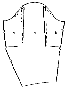
- 소매통 늘임
- 소매산 높임
- 진동 둘레의 늘임
- 진동 둘레의 줄임
(정답률: 36%)
23. 피터팬 칼라의 곡선부분 시접 처리가 아닌 것은?
- 마분지형을 대고 다린다.
- 시접을 박아 잡아 당겨서 오그린다.
- 안칼라 쪽으로0.2∼0.3㎝ 꺽는다.
- 겉칼라 쪽으로0.5∼0.9㎝ 꺽는다.
(정답률: 58%)
24. 칼라의 종류가 다른 것은?
- 세일러 칼라
- 피터팬 칼라
- 롤 칼라
- 수티앵 칼라
(정답률: 65%)
25. 110 cm 폭의 옷감으로 타이트 스커트를 재단할 때 옷감 계산법으로 바른 것은?
- 스커트 길이 + 시접(6-8cm)
- (스커트 길이抉2) + 시접(12-16cm)
- (스커트 길이抉1.5) + 시접(12-16cm)
- 스커트 길이 + 시접(2-2.5cm)
(정답률: 44%)
26. 다음 중 밑실이 끊어지는 경우는?
- 밑실의 장력이 너무 강할 때
- 바늘이 잘못 끼워졌을 때
- 윗실 걸기가 잘못 되었을 때
- 윗실과 밑실이 같은 실이 아닐 때
(정답률: 81%)
27. 그림(A)에 나타난 밑위 앞뒤 길이는 실측치수에 어느정도 여유분이 있어야 편안한가 ?
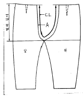
- A= 실측치수 + 1㎝
- A= 실측치수 - 1.5㎝
- A= 실측치수 - 2㎝
- A= 실측치수 + 2.5㎝
(정답률: 57%)
28. 다음 그림은 어떤 스커트를 만들기 위해 옷본을 변형한 것인가?
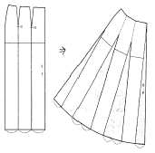
- 플레어 스커트
- 타이트 스커트
- 고어 스커트
- 맞주름 스커트
(정답률: 90%)
29. 다음 중 테일러드 자켓의 가봉에 대한 설명으로 바른 것은?
- 솔기 바느질은 어슷 상침을 사용한다.
- 포켓과 단추의 모양과 위치를 보기 위하여, 심지나 광목으로 잘라 붙인다.
- 패드나 칼라는 달지 않아도 무방하다.
- 정확한 실루엣을 보기 위하여 가위밥을 많이 주어도 좋다.
(정답률: 83%)
30. 다음 중 손으로 실 단추구멍, 훅과 아이, 스냅 등을 달때 사용하는 손바느질 방법은?
- 실표뜨기
- 버튼홀스티치
- 새발뜨기
- 감침질
(정답률: 89%)
31. 섬유의 강도를 나타내는 단위로 알맞은 것은?
- g/Nm
- g/Ne
- g/올
- g/d
(정답률: 59%)
32. 실의 굵기를 항장식으로 나타내는 것은?
- 면사
- 모사
- 마사
- 견사
(정답률: 70%)
33. 합성섬유로 만든 옷이 피부와 접촉하는 내의에 적합하지 못한 제일 큰 이유는?
- 통기성이 크기 때문에
- 열전도율이 크기 때문에
- 흡수성이 적기 때문에
- 정전기 발생이 적기 때문에
(정답률: 90%)
34. 품질이 좋은 면섬유의 특징이 아닌 것은?
- 섬유장이 길다.
- 섬유가 굵고 강하다.
- 섬유의 색이 흰색에 가깝다.
- 섬유의 광택이 우수하다.
(정답률: 62%)
35. 다음 얼룩 중 물이나 일반 세제액으로는 제거가 가장 어려운 것은?
- 혈액
- 매직잉크
- 커피
- 쥬스
(정답률: 54%)
36. 어떤 제품 공장에서 생산된 옷이 150℃ 로 다림질이 가능하다면 어느 표시를 하여야 하는가?
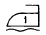
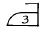
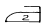
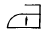
(정답률: 54%)
37. 면, 마, 레이온 등은 어떤 화합물로 구성되어 있는가?
- 셀룰로스
- 단백질
- 피브로인
- 케라틴
(정답률: 100%)
38. 다음 중 무명 섬유의 결점인 수축성을 개선하기 위한 가공법은?
- 방추 가공
- 방축 가공
- 방오 가공
- 방수 가공
(정답률: 71%)
39. 다음 중 측면 방향으로 마디(node)가 잘 발달된 섬유는?
- 양모
- 면
- 마
- 나일론
(정답률: 70%)
40. 다음 중 면사 100번수와 50번수를 설명한 것으로 알맞은 것은?
- 50번수 실의 굵기가 가늘다.
- 100번수 실의 굵기가 가늘다
- 50번수 실의 길이가 길다
- 100번수 실의 길이가 길다.
(정답률: 69%)
3과목: 임의 구분
41. 다음 중 빛의 삼원색으로 맞게 짝지워진 것은?
- 빨강, 파랑, 노랑
- 빨강, 노랑, 검정
- 빨강, 파랑, 흰색
- 빨강, 파랑, 초록
(정답률: 알수없음)
42. 빛의 3원색을 혼합하면 어떠한 색이 되는가?
- 검정색
- 노랑색
- 청색
- 백색
(정답률: 77%)
43. 무늬에서 율동감을 얻으려면 어떻게 해야 하는가?
- 색이나 형의 반복
- 균제적인 균형
- 일부분을 특히 강조
- 조화있는 공간설정
(정답률: 86%)
44. 어떤 무채색 옆에 유채색을 놓으면 그 무채색은 어떻게 보이는가?
- 옆에 있는 유채색 기미가 보임
- 옆에 있는 유채색의 보색 기미가 보임
- 실제보다 밝게 보임
- 아무런 변화가 없음
(정답률: 58%)
45. 색상대비에 대한 설명으로 옳은 것은?
- 똑같은 빨간 단추인데 노랑옷보다 회색옷에 달린 단추가 더욱 곱게 보인다.
- 청록색 잎이 우거진 속에 달린 빨간 사과가 한결 뚜렷하게 보인다.
- 검정색 옷위에 달린 흰 단추가 더욱 크게 보인다.
- 파랑위에 놓여진 녹색이 연두처럼 보인다.
(정답률: 31%)
46. 색채의 연상 작용에 관한 내용이 아닌 것은?
- 색을 보는 사람의 경험과 기억, 지식 등에 영향을 받는다.
- 색을 보는 사람의 민족성이나 나이, 성별에 따라 다르다.
- 인간의 마음을 흔드는 심리적 반응과 사회적 규범을 나타내는 사회적 반응이 있다.
- 색채의 연상에는 구체적 연상과 추상적 연상이 있다.
(정답률: 28%)
47. 계절에 따른 조화된 의복색으로 가장 부적절한 것은?
- 봄-경쾌하고 밝은 색
- 여름-탁하고 어두운 색
- 가을-어둡고 풍부한 느낌의 색상
- 겨울-따뜻한 색
(정답률: 94%)
48. 다음 중 가장 무거운 느낌이 드는 색채는?
- 밝은 파랑
- 밝은 보라
- 고채도의 빨강
- 저명도의 회색
(정답률: 83%)
49. 면적을 크게 보이게 하는 설명으로 바른 것은?
- 높은 명도의 밝고 강한 색
- 낮은 채도의 부드러운 대비 효과
- 무채색 계통의 채도가 낮은 색
- 한색 계통의 탁한 색
(정답률: 91%)
50. 하늘에 어떤 색상의 애드벌룬을 띄워야 선명하게 보이겠는가?
- 파랑
- 초록
- 주황
- 흰색
(정답률: 86%)
51. 직물 조직 중 가장 튼튼한 조직의 옷감은?
- 수자직
- 변화능직
- 평직
- 사문직
(정답률: 85%)
52. 다음 직물 중 필라멘트 실로 만든 것으로 볼 수 없는 것은?
- 인조섬유 스테이플 직물
- 비스코스 직물
- 나일론 직물
- 견직물
(정답률: 46%)
53. 다음의 듀어러블 프레스(durable press, DP) 가공에 관한 설명 중 틀린 것은?
- 수지 가공은 건방추도의 향상에는 효과가 있으나 습방추도에는 효과가 없다.
- 열고정한 합성섬유는 세탁 후에도 모양을 그대로 유지하는데 이 성질을 W & W 성이라 한다.
- 옷 상태에서도 형태안정성을 가지게 해 주는 가공을 DP가공이라 한다.
- W & W 가공이란 DP가공 효과를 고도화한 것으로 볼수 있다.
(정답률: 46%)
54. 검사 결과 날실(경사)로 판정할 수 있는 것은?
- 견본 직물에 가장자리 부분이 있을 때,가장자리 실(변사)과 수직을 이루고 있는 실이다.
- 일반적으로 실의 밀도가 적은 쪽의 실이다.
- 견본을 살펴보아,일반적으로 바르게 배열되어 있는 실이다.
- 외올실과 여러 올의 합사 직물일 때에는 외올실이다.
(정답률: 63%)
55. 여름철 옷감으로 적당한 것은?
- 옷감의 밀도가 조밀한 직물
- 드레이프성이 큰 직물
- 열전도율이 높은 직물
- 섬유의 꼬임이 적은 직물
(정답률: 54%)
56. 다음 중 면의 주요 생산지가 아닌 것은?
- 벨기에
- 미국
- 이집트
- 브라질
(정답률: 63%)
57. 다음 중 얼룩을 제거하는 방법으로 옳지 않은 것은?
- 땀- 암모니아수
- 립스틱 - 효소액
- 먹물 - 세제액
- 볼펜잉크 - 벤젠
(정답률: 55%)
58. 평직의 장,단점이 아닌 것은?
- 앞뒤의 구별이 없다.
- 제직이 간단하다.
- 표면이 매끄럽고 광택이 많다.
- 조직점이 많아 실이 자유롭게 움직이지 못해서 구김이 잘 생긴다.
(정답률: 70%)
59. 각 사람의 체형과 취미에 맞게 제작되는 가장 이상적인 피복제작 방법은?
- 기성복
- 이이지 오더(easy order)
- 가정 봉제
- 맞춤복
(정답률: 100%)
60. 수용액의 pH를 10.5∼11.0 내외가 되도록 한 세제는?
- 산성세제
- 알칼리세제
- 다목적세제
- 중성세제
(정답률: 65%)